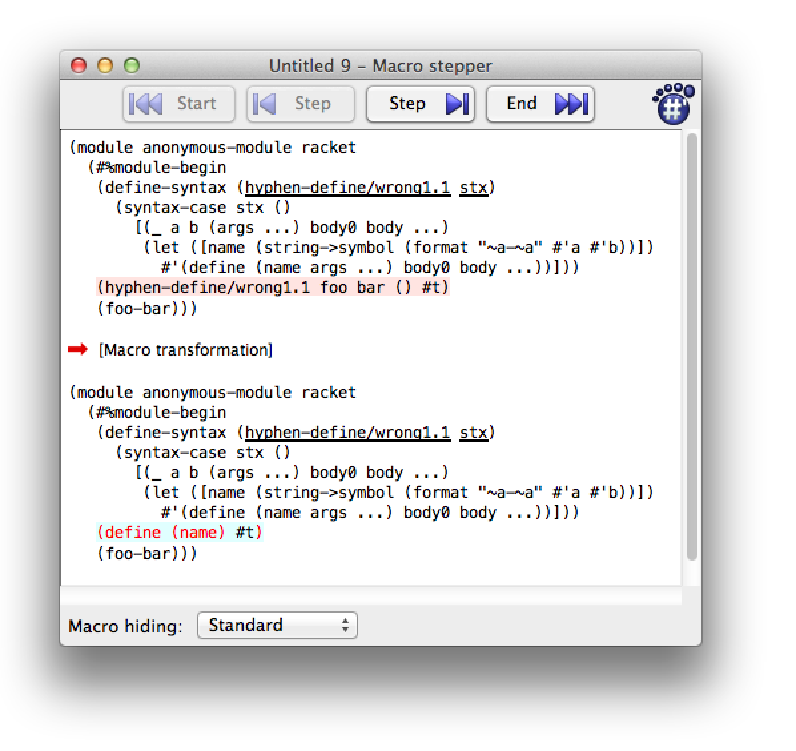

Боязнь Макросов
4.3 Использование точечной нотации для поиска по вложенным хешам |
1 Предисловие
Я изучил Racket после 25 лет использования C и C++.
В результате возник какой то психологический бич.
"Все скобки" на самом деле не имели большого значения. Вместо этого первым изменением в мозге было функциональное программирование. Вскоре оно стало моим образом мышления и я стал чувствовать себя комфортно и эффективно и по многим другим особенностям Racket.
Но остались два последних рубежа: Макросы и продолжения.
Я обнаружил что простые макросы были просты и понятны, плюс много хороших учебных пособий. Но в тот момент когда я прошёл обычное сопоставление с образцом (pattern-matching), я как бы упал с обрыва в терминологическую кашу. Я мариновал себя в этом материале, надеясь, что он в конечно итоге будет освоен после достаточного перечитывания. Я даже обнаружил, что использую метод проб и ошибок, а не чёткую мысленную модель происходящего. Блин.
Я начал писать это эссе когда очертания фигур медленно стали появляться из тумана.
Если у вас есть какие-либо исправления, критика, жалобы или что-то еще, пожалуйста дайтем мне знать.
Мой основной мотив эгоистичен. Объяснение чего-либо заставляет меня изучать это более тщательно. Плюс, если я напишу что-нибудь с ошибками, другие люди будут стремиться указать на них и исправить меня. Это социально-инженерная разновидность метапрограммирования? Следующий вопрос, пожалуйста. :)
Наконец, я надеюсь, что это сможет помочь другим людям, которые имеют такой же жизненный опыт и/или стиль обучения, что и я.
Я хочу показать, как функции макросов Racket развивались как решения проблем или неприятностей. Я учусь быстрее и глубже, когда узнаю ответ на вопрос, который у меня уже есть, или нахожу решение проблемы, боль которой я уже чувствую. Поэтому сначала я дам вам вопросы и проблемы, чтобы вы смогли лучше оценить и понять ответы и решения.
2 Наш план атаки
Система макросов, которую вы в основном захотите использовать для создания качественных макросов называется syntax-parse. И не волнуйтесь, мы скоро к этому вернемся.
Но если мы начнем с нее, вы вероятно, почувствуете, что ошеломлены концепциями и терминологией, и очень запутаетесь. Я сделал такой план:
1. Вместо этого, давайте начнем с основ: синтаксического объекта и функции
его изменения—
2. Вскоре мы поймем, что сопоставление с образцом(pattern-matching) облегчает жизнь. Мы узнаем о syntax-case и его ближайшем родственнике define-syntax-rule. Мы обнаружим, что можем запутаться, если захотим разобрать переменные шаблона, прежде чем вставлять их обратно в шаблон, и узнаем как это сделать.
3. На данный момент мы сможем написать много полезных макросов. Но что, если мы
хотим написать, когда то популярный анафорический макрос если(anaphoric if), с
"магической переменной"? Оказывается мы были защищены от ошибок определенного рода.
Когда мы хотим их сделать специально(захватить переменную, как это происходит в
при написании анафорического макроса), мы используем синтаксический параметр
(syntax parameter). [Есть и другие, более старые способы сделать это. Мы не будем
их здесь рассматривать. Мы также не будем тратить много времени на пропаганду
"гигиены(hygiene)"—
4. Наконец мы поймем, что наши макросы могут быть умнее, если их использовать ошибочно. Обычные функции Racket могут иметь контракты(contracts) и типы(types). Они перехватывают ошибки использования и предоставляют ясные, полезные сообщения об ошибках. Было бы здорово, если бы что то подобное для макросов. И это у них есть! Одним из последних усовершенствований макросов Racket является syntax-parse.
3 Преобразуй!
YOU ARE INSIDE A ROOM. |
THERE ARE KEYS ON THE GROUND. |
THERE IS A SHINY BRASS LAMP NEARBY. |
|
IF YOU GO THE WRONG WAY, YOU WILL BECOME |
HOPELESSLY LOST AND CONFUSED. |
|
> pick up the keys |
|
YOU HAVE A SYNTAX TRANSFORMER |
3.1 Что такое синтаксический преобразователь?
Синтаксический преобразователь не является одним из トランスフォーマ роботов-трансформеров.
Вместо этого это простая функция. Функция принимает синтаксис(syntax) и возвращает синтаксис(syntax). Он(преобразователь) преобразует синтаксис.
Вот функция преобразователь, которая игнорирует свой входной синтаксис и всегда выдает синтаксис для строкового литерала:
Эти примеры педполагают #lang racket. Если вы хотите попробовать их используя #lang racket/base, вам потребуется (require (for-syntax racket/base)).
> (define-syntax foo (lambda (stx) (syntax "I am foo")))
Используем его:
> (foo) "I am foo"
Когда мы используем define-syntax, мы создаем привязку(binding) к преобразователю. Она говорит компилятору Racket, "Всякий раз, когда ты столкнешься с фрагментом синтаксиса, начинающимся с foo, передай его моей функции перобразователю, и замени его синтаксисом, который я тебе верну." Таким образом Racket передаст, всё что похоже на (foo ...) нашей функции и мы сможем вернуть новый синтаксис для использования вместо него. Очень похоже на операцию поиска и замены(search-and-replace).
Может быть вы знаете, что обычный способ определения фунции в Racket:
является сокращением для:
Это сокращение позволяет избежать ввода lambda и нескольких скобок.
А это аналогичное сокращение для define-syntax:
> (define-syntax (also-foo stx) (syntax "I am also foo")) > (also-foo) "I am also foo"
Все что нужно помнить об этом, это простые сокращения. Мы все так же определяем функцию преобразователь, которая принимает синтаксис и возвращает синтаксис. Всё, что мы делаем с макросами, будет построено на основе этой основной идеи. Это не волшебство.
Говоря о сокращениях, есть также сокращение для syntax, которым является #':
> (define-syntax (quoted-foo stx) #'"I am also foo, using #' instead of syntax") > (quoted-foo) "I am also foo, using #' instead of syntax"
Теперь мы будем использовать сокращение #' вместо syntax.
Конечно, мы можем использовать синтаксис, который интереснее строкового литерала. Как насчет возврата (displayln "hi")?
> (define-syntax (say-hi stx) #'(displayln "hi")) > (say-hi) hi
Когда Racket расширяет нашу программу, он видит вхождение (say-hi), и видит что для него есть функция преобразования. Оны вызывает нашу функцию со старым синтаксисом, и мы возвращаем новый синтаксис, который и используется для вычисления и запуска нашей программы.
3.2 Какой вход?
Наши примеры до сих пор игнорировали входной синтаксис и выводили некоторый фиксированный синтаксис. Но обычно мы хотим преобразовать входной синтаксис во что-то другое.
Давайте начнем с того, что внимаетльно посмотрим на то, что на самом деле представляет собой вход - это:
> (define-syntax (show-me stx) (print stx) #'(void)) > (show-me '(+ 1 2)) #<syntax:eval:10:0 (show-me (quote (+ 1 2)))>
(print stx) показывает что передано нашему преобразователю: это синтаксический объект.
Синтаксический объект состоит из нескольких вещей. Первая часть, это S-выражение, представляющее код, например такой как '(+ 1 2).
Объект syntax в Racket также украшен некоторой интересной информацией, такой как исходный файл, номер строки и столбца. Наконец, в нем есть информация о лексиеческой области видимости ( о которой вам пока не нужно беспокоиться, но которая станет важной позже.)
Существует множество функций для доступа к синтаксическому объекту. Давайте определим части синтаксиса(syntax):
> (define stx #'(if x (list "true") #f)) > stx #<syntax:eval:11:0 (if x (list "true") #f)>
Теперь давайте использовать функции, которые обращаются к синтаксическому объекту. Функция выдающая информацию об источнике синтаксиса:
(syntax-source stx) возвращает 'eval, только из-за того, что я генерирую эту документацию, используя интерпретатор(evaluator) для запуска кода в Scribble. Обычно это будет что-то вроде имени файла "my-file.rkt".
> (syntax-source stx) 'eval
> (syntax-line stx) 11
> (syntax-column stx) 0
Более интересным является синтаксис самого "материала(stuff)". syntax->datum полностью преобразует его в S-выражение:
> (syntax->datum stx) '(if x (list "true") #f)
В то время как syntax-e спускается только на "один уровень вниз". Он может вернуть список синтаксических объектов:
> (syntax-e stx) '(#<syntax:eval:11:0 if> #<syntax:eval:11:0 x> #<syntax:eval:11:0 (list "true")> #<syntax:eval:11:0 #f>)
Каждый из этих синтаксических объектов может быть преобразован с помощью syntax-e, а также рекурсивно—
В большинстве случаев, syntax->list дает тот же результат, что и syntax-e:
> (syntax->list stx) '(#<syntax:eval:11:0 if> #<syntax:eval:11:0 x> #<syntax:eval:11:0 (list "true")> #<syntax:eval:11:0 #f>)
(Когда syntax-e и syntax->list будут отличаться? Давайте не будем сейчас отвлекаться от намеченного курса.)
Когда мы хотим преобразовать синтаксис, мы обычно берем фрагменты, которые нам дали, возможно меняем их поряедок, возможно менем некоторые фрагменты и часто вводим совершенно новые фрагменты.
3.3 Фактическое преобразование входа
Давайте напишем функцию преобразователь, которая переворачивает(reverses) синтаксис, который ей был задан:
values в конце примера позволяет хорошо оценить результат. Попробуйте (reverse-me "backwards" "am" "i") чтобы увидеть, почему это удобно.
> (define-syntax (reverse-me stx) (datum->syntax stx (reverse (cdr (syntax->datum stx))))) > (reverse-me "backwards" "am" "i" values) "i"
"am"
"backwards"
Понять Йоду мы можем. Отлично, но как это работает?
Вначале мы берем входной синтаксис и передаем его syntax->datum. Он преобразует синтаксис в простой старый список:
> (syntax->datum #'(reverse-me "backwards" "am" "i" values)) '(reverse-me "backwards" "am" "i" values)
Используя cdr вырезаем первый элемент списка, reverse-me, оставив остаток: ("backwards" "am" "i" values). Передаем его в reverse изменяющим его в (values "i" "am" "backwards"):
> (reverse (cdr '(reverse-me "backwards" "am" "i" values))) '(values "i" "am" "backwards")
Наконец мы используем datum->syntax для преобразования этого списка обратно в syntax:
> (datum->syntax #f '(values "i" "am" "backwards")) #<syntax (values "i" "am" "backwards")>
Вот что наша функция преобразователь возвращает компилятору Racket, иэтот синтаксис вычисляется:
> (values "i" "am" "backwards") "i"
"am"
"backwards"
Первый аргумент datum->syntax содержит информацию лексического контекста, которую мы хотим связать с syntax выдаваемым(возвращаемым) преобразователем. Если первый аргумент установлен в #f лексический контекст ассоциирован не будет.
3.4 Время компиляции против времени выполнения
| (define-syntax (foo stx) |
| (make-pipe) ;Ce n'est pas le temps d'exécution |
| #'(void)) |
Обычный код Racket запускается ... во время выполнения. Duh.
Вместо "время компиляции против времени выполнения", вы можете описывать это как"фаза синтаксического анализа против фазы времени выполнения". Разницы нет.
Но преобразователь синтаксиса вызывается Racket как часть процесса разбора, расширения и компиляции нашей программы. Другими словами, наша функция синтаксического преобразования вычисляется во время компиляции.
Этот аспект макросов позволяет вам делать вещи, которые просто невозможны в обычном коде. Одним из классических примеров является что то вроде Racket формы, if:
(if <condition> <true-expression> <false-expression>)
Если бы мы реализовали if как функцию, все ее аргументы были бы вычислены перед тем как они бы были переданы в функцию.
> (define (our-if condition true-expr false-expr) (cond [condition true-expr] [else false-expr]))
> (our-if #t "true" "false") "true"
Это похоже на работу. Тем не менее, как на счет этого:
> (define (display-and-return x) (displayln x) x)
> (our-if #t (display-and-return "true") (display-and-return "false"))
true
false
"true"
Один из ответов заключается в том, что функциональное программирование это хорошо, а побочные(сторонние) эффекты это плохо. Но избегать побочных эффектов не всегда практично.
Уппс. Поскольку выражения имеют побочный эффект, очевидно, что они оба вычисляются.
И это может быть проблемой—
Так что это просто не может работать как обычная функция. Однако преобразователь синтаксиса, может изменить синтаксис – переписать код – во время компиляции. Части синтаксиса перемещаются, но фактически, они не вычисляются до времени выполнения.
Вот один из способов это сделать:
> (define-syntax (our-if-v2 stx) (define xs (syntax->list stx)) (datum->syntax stx `(cond [,(cadr xs) ,(caddr xs)] [else ,(cadddr xs)])))
> (our-if-v2 #t (display-and-return "true") (display-and-return "false")) true
"true"
> (our-if-v2 #f (display-and-return "true") (display-and-return "false")) false
"false"
Это дало правильный ответ. Но как? Давайте вытащим саму функцию преобразователь и посмотрим, что она сделала. Мы начнем с примера некоторого входного синтаксиса:
> (define stx #'(our-if-v2 #t "true" "false")) > (displayln stx) #<syntax:eval:32:0 (our-if-v2 #t "true" "false")>
1. Мы берем исходный(оригинальный) синтаксис, и используем syntax->list чтобы изменить его на список синтаксических объектов:
> (define xs (syntax->list stx)) > (displayln xs) (#<syntax:eval:32:0 our-if-v2> #<syntax:eval:32:0 #t> #<syntax:eval:32:0 "true"> #<syntax:eval:32:0 "false">)
2. Чтобы преобразовать его в Racket форму cond, нам нужно взять три интересующих фрагмента
—
`(cond [,(cadr xs) ,(caddr xs)] [else ,(cadddr xs)])
3. Наконец, мы изменяем это выражение на syntax используя datum->syntax:
> (datum->syntax stx `(cond [,(cadr xs) ,(caddr xs)] [else ,(cadddr xs)])) #<syntax (cond (#t "true") (else "false"))>
Так что это работает, но с использование cadddr и т.д. для разбора списка является болезненным и подверженным ошибкам. Может быть вы знаете функцию Racket match? Её использование позволило бы нам использовать сопоставление с образцом(pattern-matching).
Обратите внимание, что нас не волнует первый элемент в синтаксическом списке. Мы не принимали (car xs) в our-if-v2, и мы не использовали name когда использовали сопоставление с образцом(pattern-matching). В общем, синтаксический преобразователь не беспокоиться о нем, потому что это имя привязки преобразователя. Другими словами, макрос обычно не заботится о своем собственном имени.
Вместо:
> (define-syntax (our-if-v2 stx) (define xs (syntax->list stx)) (datum->syntax stx `(cond [,(cadr xs) ,(caddr xs)] [else ,(cadddr xs)])))
Мы можем записать:
> (define-syntax (our-if-using-match stx) (match (syntax->list stx) [(list name condition true-expr false-expr) (datum->syntax stx `(cond [,condition ,true-expr] [else ,false-expr]))]))
Отлично. Теперь давайте попробуем его использовать:
> (our-if-using-match #t "true" "false") match: undefined;
cannot reference an identifier before its definition
in module: 'program
Упппс. Получаем жалобу, что match не определено.
Наша функция преобразования работает во время компиляции, а не во время
выполнения, А во время компиляции, для нас автоматически требуется только
racket/base —
Все, кроме racket/base, мы должны требовать(require)
сами—
В этом случае вместо использования обычного (require racket/match), нам надо использовать часть (require (for-syntax racket/match))—
Итак, давайте попробуем это:
> (require (for-syntax racket/match))
> (define-syntax (our-if-using-match-v2 stx) (match (syntax->list stx) [(list _ condition true-expr false-expr) (datum->syntax stx `(cond [,condition ,true-expr] [else ,false-expr]))])) > (our-if-using-match-v2 #t "true" "false") "true"
Ура!
3.5 begin-for-syntax
Мы используем for-syntax в выражении, требования загрузки - require модуля racket/match потому что нам нужно было использовать функцию match во время компиляции.
Что, если мы хотим определить нашу собственную вспомогательную функцию, которая будет использоваться макросом? Одним из способов сделать это - поместить её в другой модуль и потребовать загрузить ее во время компиляции require воспользовавшись for-syntax, как мы это делали с модулем racket/match module.
Если в место этого мы хотим поместить эту вспомогательную функцию в тот же модуль,
мы не можем просто определить(
define) его и использовать его—
(begin-for-syntax (define (my-helper-function ....) ....)) (define-syntax (macro-using-my-helper-function stx) (my-helper-function ....) ....)
В простом случае, мы можем использовать define-for-syntax, которое сочетает begin-for-syntax и define:
(define-for-syntax (my-helper-function ....) ....) (define-syntax (macro-using-my-helper-function stx) (my-helper-function ....) ....)
Для обзора:
Синтаксические преобразователи работают во время компиляции, а не во время выполнения. Хорошая новость заключается в том, что мы можем делать такие вещи, как реорганизация(перестановка) фрагментов синтаксиса без их вычисления. Мы можем реализовать формы, такие как if которые просто не могут работать должным образом как функции времени выполнения.
Еще одна хорошая новость заключается в том, что не существует какого-то особенного, странного языка для написания синтаксических преобразователей. Мы можем написать эти функци используя язык Racket, который мы уже знаем и любим.
Плохая новость заключается в том, что мы это знакомство позволяет легко забыть, что мы не работаем во время выполнения. Иногда это важно помнить.
Например, только racket/base является для нас автоматически затребуемым(required). Если нам нужны другие модули, мы должны затребовать их, и делать это so во время компиляции используя for-syntax.
Точно также, если мы хотим определить вспомогательные функции в том же файле/модуле, что и макросы, которые их используют, нам нужно заключить их определения в форму begin-for-syntax. Это делает их доступными во время компиляции.
4 Сопоставление с образцом: syntax-case и syntax-rules
Наиболее полезные синтаксические преобразователи работают принимая некоторый входной синтаксис и преобразуют(переставляют) его части во что-то еще. Как мы видели, это возможно, но утомительно делать используя методы доступа к спискам, такие как cadddr. Более удобно и менее подверженно ошибкам использовать match сопоставление с образцом(pattern-matching).
Исторически, сложилось так, что сопоставление с образцом с помощью syntax-case и syntax-rules использовались первыми. match был добавлен в Racket позже.
Оказывается, что сопоставление с образцом было одним из первых улучшений, которые были добавлены в систему макросов Racket. Оно называется syntax-case, и имеет сокращение для простых ситуаций называемое define-syntax-rule.
Вспомните наш предыдущий пример:
(require (for-syntax racket/match)) (define-syntax (our-if-using-match-v2 stx) (match (syntax->list stx) [(list _ condition true-expr false-expr) (datum->syntax stx `(cond [,condition ,true-expr] [else ,false-expr]))]))
Теперь посмотрите, как это выглядит с использованием syntax-case:
> (define-syntax (our-if-using-syntax-case stx) (syntax-case stx () [(_ condition true-expr false-expr) #'(cond [condition true-expr] [else false-expr])])) > (our-if-using-syntax-case #t "true" "false") "true"
Довольно похоже, да? Часть соопоставления с образцом выглядит почти точно также. Способ, которым мы указываем новый синтаксис, проще. Нам не нужно делать квази- цитировани и децитирование. Нам не нужно использовать datum->syntax. Вместо этого, мы предоставляем "шаблон(template)", который использует переменные из образца.
Для простых случаев сопоставления с образцом существует сокращение, которое расширяется до syntax-case. Оно называется define-syntax-rule:
> (define-syntax-rule (our-if-using-syntax-rule condition true-expr false-expr) (cond [condition true-expr] [else false-expr])) > (our-if-using-syntax-rule #t "true" "false") "true"
Здесь все что нужно для define-syntax-rule. Поскольку оно очень простое, define-syntax-rule является первым, чему учат людей о макросах.
Но эта простота обманчива. Оно(определение) похоже на определение обычной функции
времени выполнения—
Большинство материалов, которые я нашел для изучения макросов, включая Racket Guide, очень хорошо объясняют, как работают образцы и шаблоны. Так что я не буду объяснять это здесь.
Иногда, нам нужно сделать шаг за пределы образца и шаблона. Давайте посмотрим на некоторые примеры, как мы можем запутаться и как это работает.
4.1 Переменные образца(Pattern variable)
против шаблона(template)— сражение!
Допустим мы хотим определить функцию, с написанным через дефис именем, a-b, но мы предоставляем
части a и b отдельно. Racket макрос struct делает нечто подобное этому, например: (struct foo (field1
field2)) автоматически определяет ряд функций, имена которых
являются вариациями имени foo—
Итак, давайте представим, что мы делаем что-то подобное. Мы хотим преобразовать синтаксис (hyphen-define a b (args) body) в синтаксис (define (a-b args) body).
Неправильная первая попытка:
> (define-syntax (hyphen-define/wrong1 stx) (syntax-case stx () [(_ a b (args ...) body0 body ...) (let ([name (string->symbol (format "~a-~a" a b))]) #'(define (name args ...) body0 body ...))])) eval:47:0: a: pattern variable cannot be used outside of a
template
in: a
Мда. Мы понятия не имеем, что означает это сообщение об ошибке. Ну давайте попробуем разобраться. "Шаблон(template)" на который ссылается сообщение об ошибке это часть #'(define (name args ...) body0 body ...). let не является часть этого шаблона. Она говори нам, что мы не можем использовать a (или b) в форме let.
Фактически, syntax-case может иметь столько шаблонов, сколько вы хотите. Очевидный, обязательный шаблон - это последнее выражение, обеспечивающее синтаксис вывода. Но вы можете использовать syntax (так же как #') для переменной образца. Это создает другой шаблон, хотя и не большой, шаблон "забавного размера(fun size)". Давайте попробуем это:
> (define-syntax (hyphen-define/wrong1.1 stx) (syntax-case stx () [(_ a b (args ...) body0 body ...) (let ([name (string->symbol (format "~a-~a" #'a #'b))]) #'(define (name args ...) body0 body ...))]))
Ошибок больше нет—
> (hyphen-define/wrong1.1 foo bar () #t) > (foo-bar) foo-bar: undefined;
cannot reference an identifier before its definition
in module: 'program
Очевидно, наш макрос определяет функцию с некоторым именем, отличным от foo-bar. Мда.
Даже если вы предпочитаете в основном использовать Emacs, в этой ситуации определенно стоит использовать DrRacket ради его Macro Stepper(расширителя макросов).

Расширитель макросов(Macro Stepper) говорит, что использование нашего макроса:
(hyphen-define/wrong1.1 foo bar () #t)
расширяется в:
(define (name) #t)
Что ж, это объясняет наш результат. Вместо того чтобы расшириться в:
(define (foo-bar) #t)
Наш шаблон использует символ name, а мы хотели использовать его значение, такое как foo-bar в этом использовании нашего макроса.
Есть ли что-то, что ведет себя подобно этому—
> (define-syntax (hyphen-define/wrong1.2 stx) (syntax-case stx () [(_ a b (args ...) body0 body ...) (syntax-case (datum->syntax #'a (string->symbol (format "~a-~a" #'a #'b))) () [name #'(define (name args ...) body0 body ...)])]))
Выглядит странно? Давайте сделаем глубокий вдох. Обычно наша функция преобразователя задает синтаксис Racket, и мы передаем этот синтаксис в syntax-case. Но мы также можем создать собственный синтаксис на лету, и передать его в syntax-case. Это всё, что мы делаем здесь. Целое выражение (datum->syntax ...) это синтаксис, который мы создаем на лету. Мы можем передать его в syntax-case, и сопоставить его используя переменную образца с именем name. Вуаля, у нас есть новая переменная образца. Мы можем использовать её в шаблоне, и её значение переходит в шаблон.
У нас может быть еще одна—
> (hyphen-define/wrong1.2 foo bar () #t) > (foo-bar) foo-bar: undefined;
cannot reference an identifier before its definition
in module: 'program
Hmm. foo-bar до сих пор still не определен! Вернмеся в пошаговый расширитель макросов(Macro Stepper). Сейчас он говорит что мы расширяемся в:
(define (|#<syntax:11:24foo>-#<syntax:11:28 bar>|) #t)
Да, правильно: #'a и #'b являются объектами синтаксиса. Следовательно
(string->symbol (format "~a-~a" #'a #'b))
является печатной формой обоих синтксических объектов, соединенных дефисом:
|#<syntax:11:24foo>-#<syntax:11:28 bar>|
Вместо этого мы хотим получить данные(datum) в синтаксических объектах, таких как символы foo и bar. Которые мы получаем с помощью syntax->datum:
> (define-syntax (hyphen-define/ok1 stx) (syntax-case stx () [(_ a b (args ...) body0 body ...) (syntax-case (datum->syntax #'a (string->symbol (format "~a-~a" (syntax->datum #'a) (syntax->datum #'b)))) () [name #'(define (name args ...) body0 body ...)])])) > (hyphen-define/ok1 foo bar () #t) > (foo-bar) #t
И теперь это работает!
Далее, несколько коротких команд.
4.1.1 with-syntax
Вместо дополнительног, вложенного syntax-case, мы могли бы использовать with-syntaxДругое имя для with-syntax могло бы быть, "с новой переменной образца".
. Она переставляет(реорганизует) syntax-case так, чтобы он выглядел больше как оператор let —
> (define-syntax (hyphen-define/ok2 stx) (syntax-case stx () [(_ a b (args ...) body0 body ...) (with-syntax ([name (datum->syntax #'a (string->symbol (format "~a-~a" (syntax->datum #'a) (syntax->datum #'b))))]) #'(define (name args ...) body0 body ...))])) > (hyphen-define/ok2 foo bar () #t) > (foo-bar) #t
Опять же, with-syntax это просто перестроенный syntax-case:
(syntax-case <syntax> () [<pattern> <body>]) (with-syntax ([<pattern> <syntax>]) <body>)
Используете ли вы дополнительный syntax-case или используете with-syntax, в любом случае вы просто определяете дополнительные переменные образца. Не позволяйте терминологии и структуре делать эти действия загадкой.
4.1.2 with-syntax*
Мы знаем, что let не позволяет нам использовать привязу в следующей за ней привязке:
> (let ([a 0] [b a]) b) a: undefined;
cannot reference an identifier before its definition
in module: 'program
Вместо этого, мы можем вкладывать lets:
> (let ([a 0]) (let ([b a]) b)) 0
Или использовать сокращение для вложенных, let*:
> (let* ([a 0] [b a]) b) 0
Аналогично, вместо написания вложенных with-syntax, мы можем использовать with-syntax*:
> (require (for-syntax racket/syntax))
> (define-syntax (foo stx) (syntax-case stx () [(_ a) (with-syntax* ([b #'a] [c #'b]) #'c)]))
Одна проблема заключается в том, что with-syntax* не предоставляется racket/base. Мы должны использовать (require (for-syntax racket/syntax)). В противном случае мы можем получить довольно странное сообщение об ошибке:
...: ellipses not allowed as an expression in: ....
4.1.3 format-id
В racket/syntax есть служебная функция, называемая format-id, которая позволяет нам форматировать имена идентификаторов более кратко, чем мы делалаи выше:
> (require (for-syntax racket/syntax))
> (define-syntax (hyphen-define/ok3 stx) (syntax-case stx () [(_ a b (args ...) body0 body ...) (with-syntax ([name (format-id #'a "~a-~a" #'a #'b)]) #'(define (name args ...) body0 body ...))])) > (hyphen-define/ok3 bar baz () #t) > (bar-baz) #t
Использовать format-id удобно, поскольку он обрабатывает утомительное преобразование из синтаксиса в строку и в символьные данные ... и обратно.
Первый аргумент format-id, lctx, это лексический
контекст, в котором будет создан идентификатор. Вы почти никогда не понадобиться
предоставлять stx—
4.1.4 Другой пример
Наконец, вот вариант, который принимает произвольное количество частей имени, которые должны быть объединены дефисами:
> (require (for-syntax racket/string racket/syntax))
> (define-syntax (hyphen-define* stx) (syntax-case stx () [(_ (names ...) (args ...) body0 body ...) (let ([name-stxs (syntax->list #'(names ...))]) (with-syntax ([name (datum->syntax (car name-stxs) (string->symbol (string-join (for/list ([name-stx name-stxs]) (symbol->string (syntax-e name-stx))) "-")))]) #'(define (name args ...) body0 body ...)))])) > (hyphen-define* (foo bar baz) (v) (* 2 v)) > (foo-bar-baz 50) 100
Также как когда мы использовали format-id, при использовании datum->syntax мы осторожны с первым аргументом lctx. Мы хотим, чтобы создаваемый нами идентификатор использовал лексический контекст идентификатор, предоставленного макросу пользователем. В этом случае идентификаторы пользователя становятся (names ...) переменной шаблона. Мы изменяем это из одного syntax в список list синтаксисов (syntax). Первый элемент мы используем для лексического контекста. Тогда, конечно, мы будем использовать все элементы для формирования разделяемого дефисами идентификатора.
Для обзора:
Вы не можете использовать переменную образца вне шаблона. Но вы можете использовать syntax или #' с переменной образца, чтобы создать специальный шаблон "забавного размера(fun size)".
Если вы хотите использовать новые переменные образца для использования в шаблоне, with-syntax является вашим другом, потому что он позволяет создавать новые переменные образца.
Обычно вам нужно использовать syntax->datum, чтобы получить внутри интересующее значение.
format-id удобен для форматирования имен идентификаторов.
4.2 Создание собственной struct
Давайте применим то, что мы только что узнали, к более реалистичному примеру. Мы притворимся, что Racket еще не обладает умением создавать struct. К счастью мы можем написать макрос, чтобы обеспечить нашу собственную систему для определения и использования структур. Для простоты, наша структура будет неизменяемой(immutable) (только для чтения) и не будет поддерживать наследования.
Учитывая объявление структуры, вроде:
(our-struct name (field1 field2 ...))
Нам нужно определить несколько процедур:
Процедуру конструктора, именем которой является имя структуры. Мы представим структуры как вектор vector. Имя структуры будет нулевым элементом. Поля будут следующими элементами вектора.
Добавляется предикат, чьё имя является именем структуры с ?.
Для каждого поля используются процедуры доступа, чтобы получить его значение. Они будут называться структура-поле(struct-field) (имя структуры, дефис, имя поля).
> (require (for-syntax racket/syntax))
> (define-syntax (our-struct stx) (syntax-case stx () [(_ id (fields ...)) (with-syntax ([pred-id (format-id #'id "~a?" #'id)]) #`(begin ; Define a constructor. (define (id fields ...) (apply vector (cons 'id (list fields ...)))) ; Define a predicate. (define (pred-id v) (and (vector? v) (eq? (vector-ref v 0) 'id))) ; Define an accessor for each field. #,@(for/list ([x (syntax->list #'(fields ...))] [n (in-naturals 1)]) (with-syntax ([acc-id (format-id #'id "~a-~a" #'id x)] [ix n]) #`(define (acc-id v) (unless (pred-id v) (error 'acc-id "~a is not a ~a struct" v 'id)) (vector-ref v ix))))))])) ; Test it out > (require rackunit) > (our-struct foo (a b)) > (define s (foo 1 2)) > (check-true (foo? s)) > (check-false (foo? 1)) > (check-equal? (foo-a s) 1) > (check-equal? (foo-b s) 2)
> (check-exn exn:fail? (lambda () (foo-a "furble"))) ; The tests passed. ; Next, what if someone tries to declare: > (our-struct "blah" ("blah" "blah")) format-id: contract violation
expected: (or/c string? symbol? identifier? keyword? char?
number?)
given: #<syntax:eval:83:0 "blah">
Сообщение об ошибке не очень помогает. Это происходит из за format-id, который является частной деталью реализации нашего макроса.
Возможно вы знаете, что предложение syntax-case может принимать необязательное выражение "guard" или "fender". Вместо
[pattern template]
оно может быть:
[pattern guard template]
Давайте добавим выражение guard к нашему предложению:
> (require (for-syntax racket/syntax))
> (define-syntax (our-struct stx) (syntax-case stx () [(_ id (fields ...)) ; Guard or "fender" expression: (for-each (lambda (x) (unless (identifier? x) (raise-syntax-error #f "not an identifier" stx x))) (cons #'id (syntax->list #'(fields ...)))) (with-syntax ([pred-id (format-id #'id "~a?" #'id)]) #`(begin ; Define a constructor. (define (id fields ...) (apply vector (cons 'id (list fields ...)))) ; Define a predicate. (define (pred-id v) (and (vector? v) (eq? (vector-ref v 0) 'id))) ; Define an accessor for each field. #,@(for/list ([x (syntax->list #'(fields ...))] [n (in-naturals 1)]) (with-syntax ([acc-id (format-id #'id "~a-~a" #'id x)] [ix n]) #`(define (acc-id v) (unless (pred-id v) (error 'acc-id "~a is not a ~a struct" v 'id)) (vector-ref v ix))))))])) ; Now the same misuse gives a better error message: > (our-struct "blah" ("blah" "blah")) eval:86:0: our-struct: not an identifier
at: "blah"
in: (our-struct "blah" ("blah" "blah"))
Позже, мы увидем как syntax-parse облегчает проверку использования и предоставляет полезные сообщения об ошибках.
4.3 Использование точечной нотации для поиска по вложеным хешам
В предыдущих двух примерах использовался макрос для определения функций, имена которых были созданы путем объединения идентификаторов, предоставленных макросу. Этот пример делает противоположное: идентификатор, переданный макросу, разбивается на части.
Если вы пишете программы для веб-сервисов, вы имеете дело с JSON, которые представлен в Racket как jsexpr?. У JSON часто есть словари, которые содержат другие словари. В jsexpr? они представлены вложенными хеш-таблицами hasheq:
; Nested ‘hasheq's typical of a jsexpr: > (define js (hasheq 'a (hasheq 'b (hasheq 'c "value"))))
В JavaScript вы можете использовать точечную запись:
foo = js.a.b.c;
В Racket это не так удобно:
Мы можем написать вспомогательную функцию, чтобы сделать это немного яснее:
; This helper function:
> (define/contract (hash-refs h ks [def #f]) ((hash? (listof any/c)) (any/c) . ->* . any) (with-handlers ([exn:fail? (const (cond [(procedure? def) (def)] [else def]))]) (for/fold ([h h]) ([k (in-list ks)]) (hash-ref h k)))) ; Lets us say: > (hash-refs js '(a b c)) "value"
Так-то лучше. Можем ли мы пойти еще дальше и использовать точечную нотацию, похожую на JavaScript?
; This macro: > (require (for-syntax racket/syntax))
> (define-syntax (hash.refs stx) (syntax-case stx () ; If the optional ‘default' is missing, use #f. [(_ chain) #'(hash.refs chain #f)] [(_ chain default) (let* ([chain-str (symbol->string (syntax->datum #'chain))] [ids (for/list ([str (in-list (regexp-split #rx"\\." chain-str))]) (format-id #'chain "~a" str))]) (with-syntax ([hash-table (car ids)] [keys (cdr ids)]) #'(hash-refs hash-table 'keys default)))])) ; Gives us "sugar" to say this: > (hash.refs js.a.b.c) "value"
; Try finding a key that doesn't exist: > (hash.refs js.blah) #f
; Try finding a key that doesn't exist, specifying the default: > (hash.refs js.blah 'did-not-exist) 'did-not-exist
Оно работает!
Мы начали понимать, что наши макросы должны давать полезные сообщения при ошибочном использовании. Давайте попробуем сделать это здесь.
> (require (for-syntax racket/syntax))
> (define-syntax (hash.refs stx) (syntax-case stx () ; Check for no args at all [(_) (raise-syntax-error #f "Expected hash.key0[.key1 ...] [default]" stx #'chain)] ; If the optional ‘default' is missing, use #f. [(_ chain) #'(hash.refs chain #f)] [(_ chain default) (unless (identifier? #'chain) (raise-syntax-error #f "Expected hash.key0[.key1 ...] [default]" stx #'chain)) (let* ([chain-str (symbol->string (syntax->datum #'chain))] [ids (for/list ([str (in-list (regexp-split #rx"\\." chain-str))]) (format-id #'chain "~a" str))]) ; Check that we have at least hash.key (unless (and (>= (length ids) 2) (not (eq? (syntax-e (cadr ids)) '||))) (raise-syntax-error #f "Expected hash.key" stx #'chain)) (with-syntax ([hash-table (car ids)] [keys (cdr ids)]) #'(hash-refs hash-table 'keys default)))])) ; See if we catch each of the misuses > (hash.refs) eval:96:0: hash.refs: Expected hash.key0[.key1 ...]
[default]
at: chain
in: (hash.refs)
> (hash.refs 0) eval:98:0: hash.refs: Expected hash.key0[.key1 ...]
[default]
at: 0
in: (hash.refs 0 #f)
> (hash.refs js) eval:99:0: hash.refs: Expected hash.key
at: js
in: (hash.refs js #f)
> (hash.refs js.) eval:100:0: hash.refs: Expected hash.key
at: js.
in: (hash.refs js. #f)
Не так уж плохо. Конечно, версия с проверкой ошибок немного длиннее. Код проверки ошибки, как правило скрывает логику, как и здесь. К счастью, мы скоро увидим, как syntax-parse может помочь смягчить это, во многом также, как контракты в обычном Racket или типы в Typed Racket.
Вомзможно мы не уверены, что написание (hash.refs js.a.b.c) на самом деле яснее, чем (hash-refs js '(a b c)). Может быть мы не будем использовать этот подход, но макросистема Racket делает его возможным для выбора.
5 Синтаксические параметры
"Анафорический(значит ссылающийся на ранее упомянутое имя(или вычисление)) if" или "aif" это популярный пример макроса. Вместо написания:
(let ([tmp (big-long-calculation)]) (if tmp (foo tmp) #f))
Вы могли бы записать:
(aif (big-long-calculation) (foo it) #f)
Другими словами, когда условие истинно, автоматически создается его идентификатор и устанавливается значение этого условия. Это должно быть легко:
> (define-syntax-rule (aif condition true-expr false-expr) (let ([it condition]) (if it true-expr false-expr))) > (aif #t (displayln it) (void)) it: undefined;
cannot reference an identifier before its definition
in module: 'program
Подождите, почему? it не определено?
Оказывается, что все время мы были защищены от определенных ошибок в наших макросах. Ошибка в том, что наш новый синтаксис вводит переменную, которая случайно(при создании анафорического макроса - намеренно) конфликтует с переменной в коде, окружающим наш макрос.
В разделе Racket Reference, Transformer Bindings, есть хорошее объяснение и пример. По сути, синтаксис имеет "метки(marks)" для сохранения лексической области. Они заставляют ваш макрос вести себя как обычная функция с точки зрения лексического охвата.
Если обычная функция определяет переменную с именем x, она не будет конфликтовать с переменной именуемой x во внешней области видимости:
> (let ([x "outer"]) (let ([x "inner"]) (printf "The inner `x' is ~s\n" x)) (printf "The outer `x' is ~s\n" x))
The inner `x' is "inner"
The outer `x' is "outer"
Когда наши макросы учитывают лексическую область видимости(охвата), проще написать надежные макросы, которые ведут себя предсказуемо.
Так что это замечательное поведение по умолчанию. Но иногда мы хотим ввести
магическую переменную специально—
Есть плохой способ сделать это и хороший способ.
Плохой способ - использвать datum->syntax, который сложно использовать правильно. См. Keeping it Clean with Syntax Parameters (PDF).
Хороший способ - использовать синтаксический параметр, используя define-syntax-parameter и syntax-parameterize. Вы, вероятно, знакомы с обычными параметрами в Racket:
> (define current-foo (make-parameter "some default value")) > (current-foo) "some default value"
> (parameterize ([current-foo "I have a new value, for now"]) (current-foo)) "I have a new value, for now"
> (current-foo) "some default value"
Это обычный(нормальный) параметр. Вариант синтаксиса работает аналогично. Идея в том, что мы определим it означающим по умолчанию ошибку. Только внутри нашего aif он будет иметь выразительное значение:
> (require racket/stxparam)
> (define-syntax-parameter it (lambda (stx) (raise-syntax-error (syntax-e stx) "can only be used inside aif")))
> (define-syntax-rule (aif condition true-expr false-expr) (let ([tmp condition]) (if tmp (syntax-parameterize ([it (make-rename-transformer #'tmp)]) true-expr) false-expr))) > (aif 10 (displayln it) (void)) 10
> (aif #f (displayln it) (void))
Внутри syntax-parameterize, it действует как псевдоним для tmp. Поведение псевдонима создаетсяmake-rename-transformer.
Если мы попытаемся использовать it вне aif формы и it не будет определен, мы получим ошибку, как мы и хотели:
> (displayln it) it: can only be used inside aif
Но если мы все еще можем определить it как обычную переменную при определении локального контекста, подобно:
> (let ([it 10]) it) 10
или:
> (define (foo) (define it 10) it) > (foo) 10
Для более глубокого освоения, см Keeping it Clean with Syntax Parameters.
6 Какой смысл в splicing-let?
Я долго изучал racket/splicing. Что он делает? Зачем мне его использовать? Почему в разеде Macros на него есть ссылка?
Шаг первый, пробить дыру в черном ящике демифилогизировать его. Например, используя splicing-let вот так:
> (require racket/splicing)
> (splicing-let ([x 0]) (define (get-x) x)) ; get-x is visible out here: > (get-x) 0
; but x is not: > x x: undefined;
cannot reference an identifier before its definition
in module: 'program
эквивалентно:
> (define get-y (let ([y 0]) (lambda () y))) ; get-y is visible out here: > (get-y) 0
; but y is not: > y y: undefined;
cannot reference an identifier before its definition
in module: 'program
Это классическая идиома Lisp/Scheme/Racket, которую иногда назвают "let over lambda". Коан(повествование) о замыканиях и объектах. Замыкание скрывает y, к которому можно получить доступ только через get-y.
Так почему же мы заботимся о сращивании(splicing) форм? Они могут быть более краткими, особенно когда есть несколько форм тела(body):
> (require racket/splicing)
> (splicing-let ([x 0]) (define (inc) (set! x (+ x 1))) (define (dec) (set! x (- 1 x))) (define (get) x))
Вариация со сращиванием(splicing) удобнее обычно используемой формы:
> (define-values (inc dec get) (let ([x 0]) (values (lambda () ; inc (set! x (+ x 1))) (lambda () ; dec (set! x (- x 1))) (lambda () ; get x))))
Когда есть много форм тела(body)—
7 Надежные макросы: syntax-parse
Функции могут быть использоваться ошибочно. Как и макросы.
7.1 Стратегии обработки ошибок для функций
С добрыми старыми функциями у нас есть несколько вариантов, как справиться с неправильным использованием.
1. Не проверять ничего.
> (define (misuse s) (string-append s " snazzy suffix")) ; User of the function: > (misuse 0) string-append: contract violation
expected: string?
given: 0
argument position: 1st
other arguments...:
" snazzy suffix"
; I guess I goofed, but – what is this "string-append" of which you ; speak??
Проблема в том, что полученное сообщение об ошибке будет сбивать с толку. Наш пользователь думает, что он неправильно вызывает misuse, но он получает сообщение об ошибке от string-append. В этом простом примере, пользователи вероятно могут догадаться, что происходит, но в большистве случаев они этого не сделают.
2. Написать некоторый код обработки ошибок.
> (define (misuse s) (unless (string? s) (error 'misuse "expected a string, but got ~a" s)) (string-append s " snazzy suffix")) ; User of the function: > (misuse 0) misuse: expected a string, but got 0
; I goofed, and understand why! It's a shame the writer of the ; function had to work so hard to tell me.
К сожалению, код обработки ошибок имеет тенденцию нарушать и/или затруднять определение функции. Кроме того, сообщение об ошибке хорошо, но не отлично. Для его получения потребуется еще больше кода обработки ошибки.
3. Использование контракта.
> (define/contract (misuse s) (string? . -> . string?) (string-append s " snazzy suffix")) ; User of the function: > (misuse 0) misuse: contract violation
expected: string?
given: 0
in: the 1st argument of
(-> string? string?)
contract from: (function misuse)
blaming: program
(assuming the contract is correct)
at: eval:131.0
; I goofed, and understand why! I'm happier, and I hear the writer of ; the function is happier, too.
Это лучший из обоих миров.
Контракт(contract) прост и лаконичен. Еще лучше, он декларативен. Мы говори, что хотим, а не как.
С другой стороны, пользователь нашей функции получает очень подробное сообщение об ошибке. Плюс, сообщение в стандартном, знакомом формате.
4. Использовать типизированный(Typed) Racket.
> (: misuse (String -> String))
> (define (misuse s) (string-append s " snazzy suffix")) > (misuse 0) eval:3:0: Type Checker: type mismatch
expected: String
given: Zero
in: 0
Более того, Typed Racket может заранее обнаруживать ошибки при использовании во время компиляции.
7.2 Стратегии обработки ошибок для макросов
Для макросов у нас есть аналогичные варианты.
1. Игнорировать возможность неправильного использования. Этот выбор еще хуже для макросов. Сообщения об ошибках по умолчанию имеют еще меньшую точность, и ещё меньше они помогают пользователю понять, что делать.
2. Написать код обработки ошибок. Мы видели, насколько это усложнит наши макросы в нашем примере использования точечной нотации для поиска по вложенным хешам. И хотя мы все еще учимся писать макросы, мы особенно не хотим большей когнитивной нагрузки и запутывания.
3. Использовать syntax-parse. Для макросов, это эквивалент использования контракта или типов для функций. Мы можем объявить, что элементами входного образца должны быть определенные виды вещей, такие как идентификаторы. Вместо "типов", виды называются "синтаксическими классами/syntax classes". Существуют передопределенные синтаксические классы, плюс мы можем определить свои собственные.
7.3 Использование syntax-parse
November 1, 2012: Так вот в чем дело. Написав все до этого момента, я счел перечитать документацию для syntax-parse. Это было...очень понятна. Я всё понял.
Зачем? В документации есть хорошее Введение с множеством примеров, за которым следует раздел Примеров(Examples) иллюстрируемый множеством реальных сценариев.
Обновление: Кроме того, Ben Greenman создал пакет, документы которого предоставляют отличный набор примеров синтаксического анализа Syntax Parse Examples.
Кроме того, все, что я узнал до этого момента, подготовило меня к пониманию того, что делает syntax-parse, и почему. Детали того, как его использовать, пока кажуться довольно простыми.
Это может быть моё временное состояние: "не знаю, что я не знаю". По мере того, как я копаюсь использую это все больше, возможно я обнаружу что-то запутанное или хитрое. Если/когда я это пойму, я вернусь сюда и обновлю этот текст.
Но сейчас, я сосредоточусь на улучшении предыдущих частей.
8 Ссылки и благодарности
Eli Barzilay’s blog post, Writing ‘syntax-case’ Macros, helped me understand many key details and concepts, and inspired me to use a "bottom-up" approach.
Eli wrote another blog post, Dirty Looking Hygiene, which explains syntax-parameterize. I relied heavily on that, mostly just updating it since his post was written before PLT Scheme was renamed to Racket.
Matthew Flatt’s Composable and Compilable Macros: You Want it When? (PDF) explains how Racket handles compile time vs. run time.
Chapter 8 of The Scheme Programming Language by Kent Dybvig explains syntax-rules and syntax-case.
Fortifying Macros (PDF) is the paper by Ryan Culpepper and Matthias Felleisen introducing syntax-parse.
Shriram Krishnamurthi looked at a very early draft and encouraged me to keep going. Sam Tobin-Hochstadt and Robby Findler also encouraged me. Matthew Flatt showed me how to make a Scribble interaction print syntax as "syntax" rather than as "#'". Jay McCarthy helped me catch some mistakes and confusions. Jon Rafkind provided suggestions. Kieron Hardy reported a font issue and some typos.
Наконец я заметил что-то странное. После написания большей части этого эссе, когда я вернулся к некоторым частям документации по Racket, я заметил, что она улучшилась с момента моего последнего прочтения. Конечно, она была той же самой; изменился я. Интересно, сколько из того, что мы уже знаем проецируется между строк. Я хочу сказать, что документация по Racket очень хорошая. Guide содержит полелзные примеры и учебные пособия. Reference очень ясное и точное.